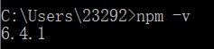

介绍
本项目是用gitbook + github page构建而成的. 对初学者来说,可以当作一份python入门学习指南.
使用
您可以直接访问 在线版，或者有的朋友网速不好, 可以根据以下步骤访问本地版。
前置条件
您的系统上需要安装好 node.
安装完成后,在cmd中输入npm-v,出现如下即为安装完成.

使用 make 命令(终端)
若您可使用 make 命令，简单执行如下命令进行初始化：
make init
执行如下命令运行服务端：
make run
使用 gitbook 命令(win10)
若您不能使用 make 命令，或想直接使用 gitbook 命令，执行如下命令进行初始化：
npm i -g gitbook-cli #可能需要sudo
gitbook install
执行如下命令运行服务端：
gitbook serve # 开启服务
访问
直接访问 http://localhost:4000 即可查看本书内容。